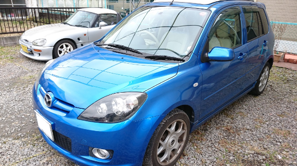

マツダデミオは、立体駐車場の利用も考慮に入れられた高めの全高と、80°まで開くリアドア、開口部の低い使い勝手の良いハッチバックを持つ、5ドアコンパクトカーである。新色3色をラインアップに加え、商品力アップがされている。エンジンはレギュラーガソリン仕様の直列4気筒DOHC、1500cc（113馬力）との1300cc（91馬力）の2ユニット。駆動方式は、前輪駆動FFとe-4WDと呼ばれる電動4WDの2タイプ。e-4WDは、専用ジェネレータで発電し後輪をモーターで駆動するシステム。2WD／4WDの切替スイッチをインパネに備え、必要ない時は2WD走行にできるため、機械式4WDと比べて燃費向上も考慮する。トランスミッションは、フロアシフトの5速マニュアルと4速オートマ。バリエーションは、アクティブな走りの1500cc搭載「SPORT（スポルト）」と、シンプルなベーシックモデルの「Casual（カジュアル）」。それにエアロパーツ、15インチアルミホイール＆タイヤ、ダークティンテッドガラス等のアイテムを標準装備した1300cc「Casual Aeroactive（エアロアクティブ）」。スポルトは、エアロパーツや16インチアルミ+専用チューンドサスペンションなど走りの装備を満載。カジュアルはヘッドランプサイズが大きく、親しみやすいデザインとしている。リヤシートはスライド&リクライニング機構をそなえる、ダブルフォールディングの5対5分割ワンタッチ可倒式で、フルフラットシート化も可能。全モデルにおいて、「平成22年度燃費基準＋5％」を達成している。また、排気ガス性能については、全車が従来通りの「平成17年基準排出ガス75％低減レベル（SU-LEV）」認定を取得、これにより全車が最高水準のグリーン税制に適合している（自動車税および自動車取得税を合わせて32,000円の軽減措置の対象）。
(参照：https://www.goo-net.com/car/MAZDA/DEMIO/DBA-DY3W.html)
新車価格によると ￥1,128,750 らしい。某中古車サイトによると、中古価格は ￥8,000～￥398,000 らしい。中古価格についてはピンキリのようだ。私の今の愛車状況だと、3万円になればいいほうだろう…
現在の走行距離は、約12万5980kmという状況。こちらとしては、走行距離が20万kmまでは何とか走ってもらいたいと思っている。